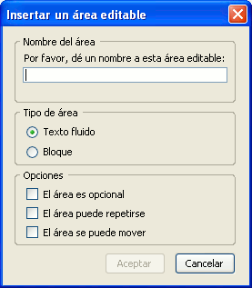
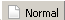
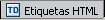
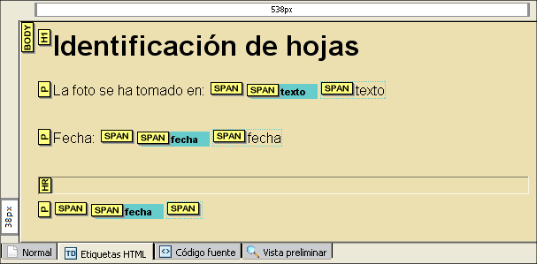
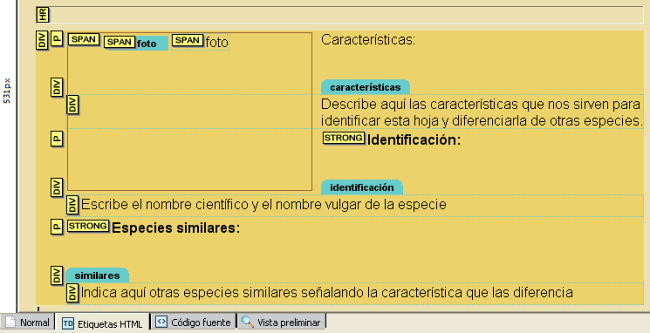

Plantillas

Como puedes imaginar por el nombre una plantilla es un modelo que nos permite aprovechar una estructura base. Gracias a ellas podremos crear de forma rápida páginas que comparten esa estructrura común, modificando únicamente aquellos contenidos que particularizan cada una de ellas. Por ejemplo, si estamos creando una página de centro y queremos establecer un patrón común para que las páginas principales de cada ciclo o departamento tengan características comunes podríamos recurrir a una plantilla.
Con estas perspectivas nos encontramos ante una herramienta que podría ser muy útil, pero lo cierto es que, en el estado actual del programa es una de los componentes que necesitan más revisión para hacerlo realmente funcional: a día de hoy el comportamiento es en algunas ocasiones poco lógico y en otras, sencillamente impredecible, con un entorno de creación que no acaba de ser intuitivo, especialmente porque los resultados que se obtienen pueden distanciarse de lo previsto.
A pesar de ello haremos una breve descripción de la herramienta por si puede sacarle partido en algún momento y, sobre todo, porque es previsible que las funcionalidades que ahora mismo no se comportan correctamente puedan corregirse en futuras versiones.

 de la barra de
herramientas.
de la barra de
herramientas. Con cualquiera de ellas obtendremos un panel para seleccionar el tipo de archivo que se desea crear, e indicaremos que queremos una plantilla vacía.
A partir de este momento dispondremos de una nueva pestaña en la que podremos ir tecleando los elementos comunes de la página.
Vamos a ver a continuación una práctica guiada en la que vamos a utilizar una plantilla.
La situación de la que partimos es que hemos realizado una salida en la que se han recogido muestras de hojas de diversas plantas para practicar la clasificación mediante consulta de claves dicotómicas. Hemos hecho fotos de cada ejemplar y pretendemos que los alumnos dejen constancia de su trabajo elaborando cada uno un par de fichas de identificación.
La primera condición es que compruebes que tienes
activada la opción en . Si has llegado aquí con un
recorrido de iniciación o estás inciando el de
profundización es tomarás un primer contacto con
los estilos en línea o incrustados (Más adelante
verás que existen formas mucho más productivas de
aplicar estilos, pero por el momento puede servirnos.
Empezamos por crear una plantilla vacía con el procedimiento que hemos comentado y le adjudicamos una serie de propiedades comunes. Para hacerlo iremos seleccionando las etiquetas en la barra de estado y pulsando con el botón derecho para elegir los estilos incrustados.
<body>
con el botón derecho y elige y
selecciona un color para el fondo.
<body> para elegir y seleccionar una fuente
predeterminada sans-serif y
cerciórate que este siguente bloque tiene el formato de
párrafo. Escribe el texto "La foto se ha tomado en:
"
y
cerciórate que este siguente bloque tiene el formato de
párrafo. Escribe el texto "La foto se ha tomado en:
" Hasta el momento hemos adjudicado estilos y hemos escrito textos que pretendemos que se mantengan de forma invariable en los documentos que se creen basados en esta plantilla. A partir de ahora empezaremos a utilizar el panel para la creación de áreas editables en la plantilla y combinaremos estas zonas con otras que permanecerán fijas.
El nombre del área que será la etiqueta que la identificará, no puede contener espacios.
El tipo se inserta como una cadena de caracteres a continuación de lo que se esté escribiendo. Cuando tengamos intención de insertar una imagen para que el texto fluya a su izquierda o su derecha habrá que utilizar este tipo.
El tipo
crea un nuevo bloque independiente de lo que teníamos hasta
el momento: equivaldría a insertar un párrafo <p>
o una división <div>
En cuanto a las opciones, su sentido es evidente pero, en la
actual versión el funcionamiento es bastante inestable y, de
hecho, la opción de que el área se pueda mover no
parece operativa en la versión 1.0 con la que se ha
trabajado y la de que el área pueda repetirse tampoco
está operativa hasta que no se separa el documento de la
plantilla. Así pues, la recomendación, hasta que
no se mejore este apartado es no hacer uso de las opciones.
Continuamos
con la actividad. Utiliza la opción
y elige .
se creará un nuevo párrafo, pero verás
que se ha
heredado también el área editable. Acude a la
barra de
estado, selecciona la etiqueta <span>
que corresponde al área editable y pulsa para eliminarla. un
par de veces.La edición de plantillas en la pestaña  es bastante incómoda, por lo que te recomiendo que pases a la pestaña  donde te será mucho más sencillo seleccionar los diferentes elementos de la página e insertar nuevas áreas editables.
<span>.
Si has seguido los pasos que hemos propuesto hasta
ahora
la apariencia será similar a lo que muestra la siguiente
imagen:
<div> en la barra
de estado y
seleccionar un color para el fondo.<span>
de la barra de estado con el botón derecho y elegiremos para
indicar allí los valores que se muestran en la
imagen y que harán que, además de fijar las
dimensiones, la zona flote en a la izquierda y deje un margen de 10
píxeles por su derecha que la separen del texto que luego
iremos escribiendo.<span>.
La forma más cómoda de hacerlo es
señalando la etiqueta para que se marque toda la
zona y pulsando la tecla de cursor .
.Una vez que se ha creado una plantilla podemos utilizarla para crear nuevos documentos, para lo que tendremos que utilizar cualquiera de los métodos que nos permiten abrir el panel de opciones.
de la barra de
herramientas. Elegiremos entonces un nuevo documento basado en una plantilla
y
seleccionaremos la plantilla que queremos utilizar tras lo cual se
abrirá una pestaña en la que podremos realizar
modificaciones en las áreas editables que se hayan
introducido.
Si las áreas editables son del tipo y se pulsa la tecla se
duplicará el área editable independientemente de
que hayamos seleccionado o no la opción
al crear la plantilla. En caso de que se tratara de un área
de
tipo bloque se producirá un salto de línea si el
formato
del párrafo era .
Cuando se completa el contenido de la nueva página
basada en
la plantilla puede guardarse la página con el nombre que
deseemos adjudicarle sin preocuparnos de más.
Aunque esto
no tendrá ninguna repercusión en los navegadores
se
mantendrán las etiquetas que marcan las áreas
editables.
Realmente sería más correcto, una vez completado
el
contenido, utilizar la opción de menú
En la versión actual del programa (1.0) hay un
error de
cierta importancia en la creación de documentos HTML: el
prólogo donde se indica la DTD
está incompleto porque no
incluye el URL
de referencia. Esto puede tener repercusión en la
forma que algunos navegadores puedan construir la página por
lo
que sería necesario corregirlo, pero el problema
está en
que N|VU no permite modificar ese prólogo (aunque se
modifique
en la pestaña  los cambios se pierden aunque guardemos la página)
los cambios se pierden aunque guardemos la página)
Una forma de corregirlo es crear una plantilla nueva y guardarla para modificar el código del documento base con un editor de texto externo. Una vez corregido el error podemos guardar el archivo con la extensión mzt para poder utilizarlo como plantilla.
Si aplicamos esta corrección, la forma adecuada de crear nuevos documentos sería hacerlo a partir de la plantilla que acabamos de crear.
Como en este caso no hemos definido
áreas editables sería muy recomendable empezar
utilizando .
Aunque se podría trabajar sin hacerlo podríamos
encontrar algún problema para especificar el tipo de
párrafo de lo primero que escribiéramos si no lo
cambiamos antes de empezar a teclear.
En la carpeta plantillas del curso tienes dos plantillas denominadas html4transitional.mzt y html4strict.mzt que tienen corregido ese error. Para los documentos XHTML, tanto si la DTD es de tipo transitional como strict no ha sido necesario elaborar plantillas alternativas porque los prólogos son correctos según las especificaciones del W3C.